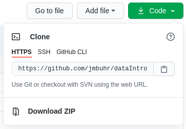
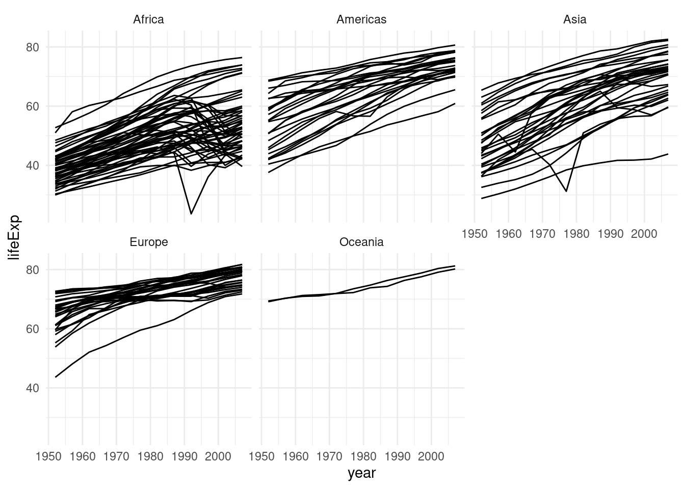
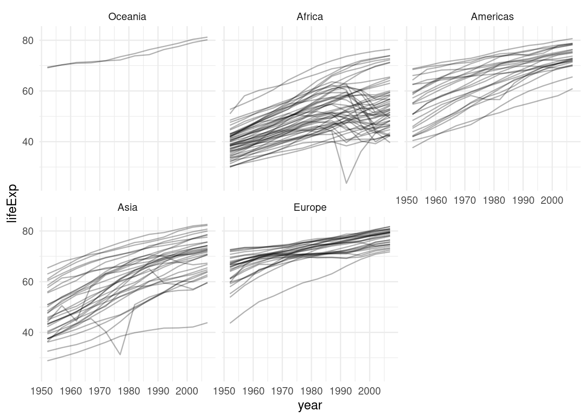
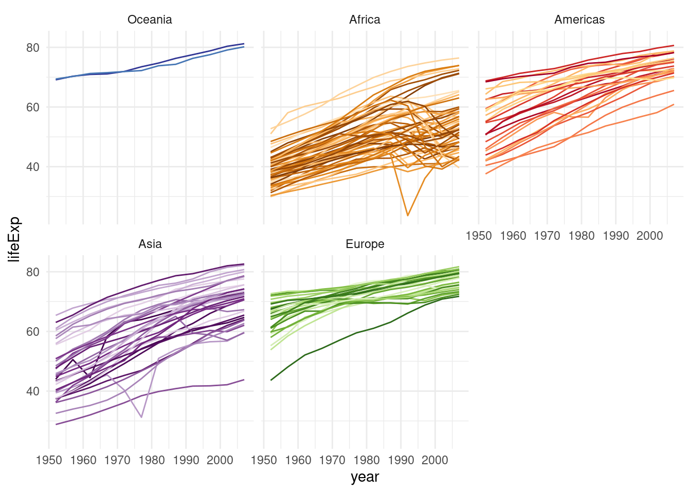

library(tidyverse)2 Data Wrangling
… in which we explore the typical data analysis workflow with the tidyverse, wrangle different kinds of data and learn about factors.
Note:
I try to be vocal about what the code does in plain English while I type it and learning the “translations” of symbols and keywords can help you, too. After a while, programming can feel a lot more like having a conversation with your digital assistant or a helpful friend. The boundary between human languages and computer languages is more blurry than you might think.
Right after the setup-chunk, where we specify common code execution options like showing the code (echo) or hiding messages and warnings, the first thing we usually do at the top of a new analysis is load the packages we are going to used. If I later find that I need some more, I come back here and add it to the list, so that people reading my code can see straight away, what they have to install in order for them to run the code themselves.
2.1 A Data Analysis Workflow
We are getting close to importing our very first dataset from a file into R. Generally, this is the first thing that needs to happen with any data analysis and we will cover it today. The data I provided is already pretty tidy so we will start with that and build some visualizations. The communicate-part is also covered, because we are working in Rmarkdown after all, which is designed to communicate our findings. Next week we will also have a look at some less tidy data, but not before having defined what “tidy data” is.

2.2 Reading Data with readr
The package responsible for loading data in the tidyverse is called readr, so we start by loading the whole tidyverse.
Note, that in general, we could also load just the readr package with library(readr), but we need the rest of the tidyverse later on anyways. There is also the option to not load a package at all but rather only use one function from a package by prefixing the function with the package name and two colons (::) Like so: readr::read_csv("...").
Without further ado, let’s download the data for today. In fact, there are multiple ways to go about this. We could download the whole course folder from GitHub https://github.com/jmbuhr/dataintro and then using the “<> Code” download button:

The data is all in a folder called data and organized into sub-folders with the lecture number. So everything you need for today can be found in folder 02.
On GitHub, we can also download individual files, but for plain text files you need to remember one extra step. If you have already clicked on the file in GitHub and can see it’s content, it is tempting to copy and paste the link from the browser bar and use R’s download.file function. However, this is just the link to the part of the website where GitHub shows the file, not a link to the actual file. We can get the correct link by clicking on the Raw button:
Then we can use this to download the file:
download.file("https://raw.githubusercontent.com/jmbuhr/dataintro/main/data/02/gapminder.csv", "example-download.csv")If you look into the source for this lecture you will find that I set the chunk option eval=FALSE, meaning the code will not but run. I don’t want to download the file again every time I make a change to the course script.
A common error I see people having with download.file is trying to download a file into e.g. a folder called data without first creating said folder. If you get one of those No such file or directory errors, this is the most likely cause.
- read gapminder data (csv)
- read csv also works with url
- but you probably also want a local copy
- write_csv and friends
Viewand ctrl+click
With our data downloaded, we can make use of RStudio’s autocompletion to complete the file-path to our data inside of quotation marks. We can trigger it explicitly with ctrl+space or tab.
gapminder <- read_csv("data/02/gapminder.csv")readr will also tell you the datatypes it guessed for the columns. Let’s inspect our dataset:
gapminder# A tibble: 1,704 × 6
country continent year lifeExp pop gdpPercap
<chr> <chr> <dbl> <dbl> <dbl> <dbl>
1 Afghanistan Asia 1952 28.8 8425333 779.
2 Afghanistan Asia 1957 30.3 9240934 821.
3 Afghanistan Asia 1962 32.0 10267083 853.
4 Afghanistan Asia 1967 34.0 11537966 836.
5 Afghanistan Asia 1972 36.1 13079460 740.
6 Afghanistan Asia 1977 38.4 14880372 786.
7 Afghanistan Asia 1982 39.9 12881816 978.
8 Afghanistan Asia 1987 40.8 13867957 852.
9 Afghanistan Asia 1992 41.7 16317921 649.
10 Afghanistan Asia 1997 41.8 22227415 635.
# ℹ 1,694 more rowsThe gapminder dataset (Bryan 2017) is an excerpt from the gapminder project and contains the life expectancy at birth for 142 countries at 5 year intervals between 1952 and 2007. It also contains the population and the Gross Domestic Product (GDP) per Inhabitant. We will built a visualization later on.
A cool trick for when you have your data in a variable is the View function. The same effect can be reached by ctrl+clicking on it or by using the button next to it in the environment panel.
It should be noted that the read_csv function can also read data from links and will download it automatically. However, in order to have the data nice and safe, we might want to save if somewhere, just in case (links can change, especially when it is someone else’s link).
our_data <- read_csv("https://raw.githubusercontent.com/jmbuhr/dataintro/main/data/02/gapminder.csv")
write_csv(our_data, "our-data.csv")2.3 A Project-based Workflow
Last week we simply went ahead and created a script file and an Rmarkdown file in some folder on our computer. But how does R known, where the script is? How does it know, where to look, when we tell it to read in a file or save a plot? The main folder where R starts is called the working directory. To find out, what our current working directory is, we execute the function getwd() for get working directory:
getwd()[1] "/home/jannik/teaching/dataintro"RStudio projects set this working directory automatically, which is very convenient. It makes it easier for us to share code and projects, by simply copying the whole folder. But we have to follow one prerequisite. Our file paths need to be relative, not absolute. An absolute file path starts at the root of our operating system, so on windows you will see something like C:\\User\Jannik\Documents\... while on mac and linux it starts with /home/jannik/Documents/.... For example, I could read the same gapminder dataset by:
read_csv("/home/jannik/Documents/projects/teaching/dataintro/data/02/gapminder.csv")But this is a terrible idea! If I ever move my analysis folder, this file path will no longer be correct and if someone else tries to run my code they will most certainly not be called Jannik and have the exact same directory structure. So it will also not work.
In order for our work to be portable, robust and shareable, we need our file paths to be relative to the root of our project (which is set by the RStudio project).
read_csv("./data/02/gapminder.csv")Here, ./ refers to the current working directory, which is set by the RStudio project. It can also be omitted (e.g. data/02/...), but the path can’t start with / because this would mark it as an absolute path.
There is also a function to set the working directory ourselves (it is called setwd), but I ask you to never use it. Because in order to use it, you would have to specify the working directory using an absolute path, rendering the script useless for anyone that is not you. Use RStudio projects instead.
There is one thing I didn’t tell you about Rmarkdown documents, yet. Their working directory is always the folder they are in, even if they are in some subdirectory of a project. In a way this also means that you don’t necessarily need a project to work with Rmarkdown, but having one anyway makes it easier to keep track of your files and have a consistent structure.
2.3.1 Common Hurdles when Importing Data
So, importing the gapminder csv went smoothly. But this will not always be the case. We will now look at common hurdles when importing data.
The function we just used was called read_csv, because it reads a file format that consists of comma separated values. Look at the raw file in a text editor (not word) like notepad or RStudio to see why. But the file extension .csv can sometimes be lying…
Because in German, the comma is used to separate decimal numbers (vs. the dot in English), a lot of Software will output a different type of csv-file when configured in German. It will still call it csv, but actually it is separated by semicolons! We have a special function for this:
read_csv2("data/02/gapminder_csv2.csv")When looking through the autocompletion options that pop up when you are typing the function name, you might have noticed a similar function read.csv and read.csv2. These are the functions that come with R, without any packages like the tidyverse. You can of course use those as well, but the tidyverse functions provide a more consistent experience and have less surprising quirks. I am teaching the tidyverse first because it allows you to do more while having to learn less edge cases.
If we look at yet another file gapminder_tsv.txt, we notice that the file extension doesn’t tell us much about the format, only that it is text (as opposed to a binary format only computers can read). If we look into the file:
read_lines("data/02/gapminder_tsv.txt", n_max = 3)[1] "country\tcontinent\tyear\tlifeExp\tpop\tgdpPercap"
[2] "Afghanistan\tAsia\t1952\t28.801\t8425333\t779.4453145"
[3] "Afghanistan\tAsia\t1957\t30.332\t9240934\t820.8530296"We notice that the values are separated by “, a special sequence that stands for the tab character. The read_tsv function will do the job. I am not showing the output here because it is just the gapminder dataset once again.
read_tsv("data/02/gapminder_tsv.txt")If the separator (also called delimiter) is even more obscure, we can use the general function read_delim. Say a co-worker misunderstood us and thought tsv stands for “Tilde separated values”, we can still read his file.
read_delim("data/02/obscure_file.tsv", "~")There are more ways in which raw data can be messy or hard to read depending on the machine but I can’t show all of them. One common thing you will encounter though is measurement machines writing some additional information in the first couple of lines before the actual data (like the time of the measurement). In this example:
read_lines("data/02/gapminder_messier.csv", n_max = 5)[1] "# Some comment about the data"
[2] "And maybe a personal note"
[3] "country,continent,year,lifeExp,pop,gdpPercap"
[4] "Afghanistan,Asia,1952,28.801,8425333,779.4453145"
[5] "Afghanistan,Asia,1957,30.332,9240934,820.8530296"The first 2 lines are not part of the data. Reading the file normally as a csv would produce something weird: Because the first line does not contain any commata, it will assume that the file contains only one column and also report a bunch of parsing failures. Parsing is the act of turning data represented as raw text into a useful format, like a table of numbers.
We can fix this by telling R to skip the first 2 lines entirely:
read_csv("data/02/gapminder_messier.csv", skip = 2, n_max = 3)# A tibble: 3 × 6
country continent year lifeExp pop gdpPercap
<chr> <chr> <dbl> <dbl> <dbl> <dbl>
1 Afghanistan Asia 1952 28.8 8425333 779.
2 Afghanistan Asia 1957 30.3 9240934 821.
3 Afghanistan Asia 1962 32.0 10267083 853.I was using the n_max argument of the functions above to save space in this lecture script.
We can also read excel files it using a function from the readxl package. This package is automatically installed with the tidyverse, but it is not loaded along with the other packages via library(tidyverse). We can either load it with library(readxl) or refer to a single function from the package without loading the whole thing using double colons (::) like so:
readxl::read_xlsx("data/02/gapminder.xlsx")# A tibble: 1,704 × 6
country continent year lifeExp pop gdpPercap
<chr> <chr> <dbl> <dbl> <dbl> <dbl>
1 Afghanistan Asia 1952 28.8 8425333 779.
2 Afghanistan Asia 1957 30.3 9240934 821.
3 Afghanistan Asia 1962 32.0 10267083 853.
4 Afghanistan Asia 1967 34.0 11537966 836.
5 Afghanistan Asia 1972 36.1 13079460 740.
6 Afghanistan Asia 1977 38.4 14880372 786.
7 Afghanistan Asia 1982 39.9 12881816 978.
8 Afghanistan Asia 1987 40.8 13867957 852.
9 Afghanistan Asia 1992 41.7 16317921 649.
10 Afghanistan Asia 1997 41.8 22227415 635.
# ℹ 1,694 more rowsRemember, that when we read in the gapminder dataset for the first time to day, we saved it in a variable called gapminder, so we are going to use this going forward.
2.4 Wrangling Data with dplyr
There a are a number of ways in which we can manipulate data. Of course I mean manipulate in it’s original sense, not the malicious one. This is sometimes referred to as data wrangling and within the tidyverse, this is a job for the dplyr package (short for data plyer, the tool you see in the logo).
dplyr provides functions for various operations on our data. Theses functions are sometimes also called dplyr verbs. All of them take a tibble or data.frame as input (plus additional parameters) and always return a tibble. But enough talk, let’s go wrangling!

2.4.1 select
The first verb we introduce is used to select columns. And hence, it is called select. The first argument is always the data, followed by an arbitrary number of column names. We can recognize functions the take an arbitrary number of additional arguments by the ... in the autocompletion and help page.
select(gapminder, country, year, gdpPercap)# A tibble: 1,704 × 3
country year gdpPercap
<chr> <dbl> <dbl>
1 Afghanistan 1952 779.
2 Afghanistan 1957 821.
3 Afghanistan 1962 853.
4 Afghanistan 1967 836.
5 Afghanistan 1972 740.
6 Afghanistan 1977 786.
7 Afghanistan 1982 978.
8 Afghanistan 1987 852.
9 Afghanistan 1992 649.
10 Afghanistan 1997 635.
# ℹ 1,694 more rowsIt might be confusing why we don’t need quotation marks around the column names like we do in other languages or even other parts of R.
This concept is known as quasiquotation or data masking. It is quite unique to R, but it allows functions to known about the content of the data that is passed to them and use this as the environment in which they do their computations and search for variable names. So while the variable country doesn’t exist in the global environment, it does exist as a column of the gapminder tibble.
dplyrfunctions always look in the data first when they search for names.
The help page for select tells us more about the different ways in which we can select columns. Here are a couple of examples without the output, run them in your R session to confirm that they do what you think they do (but do have a look at the help pages yourselves, they are quite well written).
select(gapminder, year:pop)
select(gapminder, starts_with("co"))
select(gapminder, where(is.numeric))
select(gapminder, where(is.character))
select(gapminder, c(1, 3, 4))2.4.2 filter
After selecting columns it is only natural to ask how to select rows. This is achieved with the function filter.

Here, we select all rows, where the year is greater than 2000 and the country is New Zealand.
filter(gapminder, year > 2000, country == "New Zealand")Because text comparisons are cases sensitive, we would have missed New Zealand had we written it with lowercase letters. In order to make sure we find the correct country, it can be helpful to simply convert all country names to lower case, and in fact we can use functions on our columns straight inside of any dplyr verb. Functions that deal with text (strings or character in R’s language) in the tidyverse start with str_, so they are easy to find with autocompletion.
filter(gapminder, year > 2000, str_to_lower(country) == "new zealand")Instead of combining conditions with , (which works the same as & here), we can also use | meaning or. Here, we get all rows where the country is New Zealand or the country is Afghanistan.
filter(gapminder, country == "New Zealand" | country == "Afghanistan")This particular comparison can be written more succinctly, by asking (for every row), is the particular country %in% this vector?
filter(gapminder, country %in% c("New Zealand", "Afghanistan"))2.4.3 mutate
We are back at manipulating columns, this time by creating new ones or changing old ones. The dplyr verb that does that is called mutate. For example, we might want to calculate the total GDP from the GDP per Capita and the population:
mutate(gapminder, gdp = pop * gdpPercap)# A tibble: 1,704 × 7
country continent year lifeExp pop gdpPercap gdp
<chr> <chr> <dbl> <dbl> <dbl> <dbl> <dbl>
1 Afghanistan Asia 1952 28.8 8425333 779. 6567086330.
2 Afghanistan Asia 1957 30.3 9240934 821. 7585448670.
3 Afghanistan Asia 1962 32.0 10267083 853. 8758855797.
4 Afghanistan Asia 1967 34.0 11537966 836. 9648014150.
5 Afghanistan Asia 1972 36.1 13079460 740. 9678553274.
6 Afghanistan Asia 1977 38.4 14880372 786. 11697659231.
7 Afghanistan Asia 1982 39.9 12881816 978. 12598563401.
8 Afghanistan Asia 1987 40.8 13867957 852. 11820990309.
9 Afghanistan Asia 1992 41.7 16317921 649. 10595901589.
10 Afghanistan Asia 1997 41.8 22227415 635. 14121995875.
# ℹ 1,694 more rowsNotice, that none of the functions changed the original variable gapminder. They only take an input and return and output, which makes it easier to reason about our code and later chain pieces of code together. How do you change it then? Use the Force! … ahem, I mean, the assignment operator (<-).
gapminder <- mutate(gapminder, gdp = pop * gdpPercap)Here, the power of dplyr shines. It knows that pop and gdpPercap are columns of the tibble and that gdp refers to the new name of the freshly created column.
2.4.4 Interlude: Begind the magic, handling data with base-R
This section is meant to show you what happens behind the scenes. It is not strictly necessary to understand all the details of it in order to work effectively with the tidyverse, but it helps especially when things don’t go as planned.
Let’s create a tibble to play with:
test_tibble <- tibble(
x = 1:5,
y = x ^ 2,
z = c("hello", "world", "test", "four", "five")
)
test_tibble# A tibble: 5 × 3
x y z
<int> <dbl> <chr>
1 1 1 hello
2 2 4 world
3 3 9 test
4 4 16 four
5 5 25 five Instead of the tidyverse functions, we can also use what is called subsetting, getting a subset of our datasctructure, with square brackets:
test_tibble[c(1, 3)]# A tibble: 5 × 2
x z
<int> <chr>
1 1 hello
2 2 world
3 3 test
4 4 four
5 5 five This selected the first and third column. This also works for lone vectors:
evens <- seq(0, 10, 2)
evens[c(1, 3)][1] 0 4If we want to select columns by their names without the tidyverse, we have to pass these names as a character vector (hence the quotation marks).
test_tibble[c("x", "z")]# A tibble: 5 × 2
x z
<int> <chr>
1 1 hello
2 2 world
3 3 test
4 4 four
5 5 five If we have two things in the square brackets, separated by a comma, the first refers to the rows and the second refers to the columns. e.g. this would be “the first row and the columns from 1 to 2”:
test_tibble[1, 1:2]# A tibble: 1 × 2
x y
<int> <dbl>
1 1 1Internally, tibbles / dataframes are lists of columns. Lists have more ways of accessing their elements. The $ symbol gets us an element from the list:
test_tibble$x[1] 1 2 3 4 5If we want to use numbers (=indices) to get a single element from a list (or a column from a tibble), we have ot use double square brackets:
test_tibble[[1]][1] 1 2 3 4 5The reason for this: Single square brackets give us a subset of the list, which is still packed up in a list. If we want to unpack it to work with it we need the content of just one element [[ does that for us.
The pull function from the tidyverse works like $.
pull(test_tibble, x)[1] 1 2 3 4 5Subsetting not only works for looking at things, it also allows us to replace the part we are subsetting:
x <- 1:10
x[1] <- 42
x [1] 42 2 3 4 5 6 7 8 9 10Note:
The base-R and the tidyverse way are not mutually exclusive. Sometimes you can mix and match.
2.4.5 The pipe %>%
The tidyverse functions are easier to compose (i.e. chain together). To facilitate this, we introduce another operator, a bit like + for numbers or the + to add ggplot components, but specially for functions. The pipe, which you can either type or insert in RStudio with Ctrl+Shift+M, takes it’s left side and passes it as the first argument to the function on the right side
Why is this useful? Imagine our data processing involves a bunch of steps, so we save the output to intermediate variables.
subset_gapminder <- select(gapminder, country, year, pop)
filtered_gapminder <- filter(subset_gapminder, year > 200)
final_gapminder <- mutate(filtered_gapminder, pop_thousands = pop / 1000)
final_gapminder# A tibble: 1,704 × 4
country year pop pop_thousands
<chr> <dbl> <dbl> <dbl>
1 Afghanistan 1952 8425333 8425.
2 Afghanistan 1957 9240934 9241.
3 Afghanistan 1962 10267083 10267.
4 Afghanistan 1967 11537966 11538.
5 Afghanistan 1972 13079460 13079.
6 Afghanistan 1977 14880372 14880.
7 Afghanistan 1982 12881816 12882.
8 Afghanistan 1987 13867957 13868.
9 Afghanistan 1992 16317921 16318.
10 Afghanistan 1997 22227415 22227.
# ℹ 1,694 more rowsHowever, we don’t really need those intermediate variables and they just clutter our code. The pip allows us to express our data processing as a series of steps:
final_gapminder <- gapminder %>%
select(country, year, pop) %>%
filter(year > 2000) %>%
mutate(pop_thousands = pop / 1000)
final_gapminder# A tibble: 284 × 4
country year pop pop_thousands
<chr> <dbl> <dbl> <dbl>
1 Afghanistan 2002 25268405 25268.
2 Afghanistan 2007 31889923 31890.
3 Albania 2002 3508512 3509.
4 Albania 2007 3600523 3601.
5 Algeria 2002 31287142 31287.
6 Algeria 2007 33333216 33333.
7 Angola 2002 10866106 10866.
8 Angola 2007 12420476 12420.
9 Argentina 2002 38331121 38331.
10 Argentina 2007 40301927 40302.
# ℹ 274 more rowsYou can read the pipe in your head as “and then” or “take … pass it into …”.
And because all main tidyverse functions take data as their first argument, we can chain them together fluently Additionally, it enables autocompletion of column names inside of the function that gets the data.
Next to the tidyverse pipe %>%, you might also see |> at some point. The latter is a pipe that was introduced to base-R because this whole piping thing got so popular they are making it part of the core language.
2.4.6 arrange
A simple thing you might want from a table is to sort it based on some column. This is what arrange does:
gapminder %>%
arrange(year)# A tibble: 1,704 × 7
country continent year lifeExp pop gdpPercap gdp
<chr> <chr> <dbl> <dbl> <dbl> <dbl> <dbl>
1 Afghanistan Asia 1952 28.8 8425333 779. 6567086330.
2 Albania Europe 1952 55.2 1282697 1601. 2053669902.
3 Algeria Africa 1952 43.1 9279525 2449. 22725632678.
4 Angola Africa 1952 30.0 4232095 3521. 14899557133.
5 Argentina Americas 1952 62.5 17876956 5911. 105676319105.
6 Australia Oceania 1952 69.1 8691212 10040. 87256254102.
7 Austria Europe 1952 66.8 6927772 6137. 42516266683.
8 Bahrain Asia 1952 50.9 120447 9867. 1188460759.
9 Bangladesh Asia 1952 37.5 46886859 684. 32082059995.
10 Belgium Europe 1952 68 8730405 8343. 72838686716.
# ℹ 1,694 more rowsThe helper function desc marks a column to be arranged in descending order. We can arrange by multiple columns, where the first will be most important.
gapminder %>%
arrange(desc(year), pop)# A tibble: 1,704 × 7
country continent year lifeExp pop gdpPercap gdp
<chr> <chr> <dbl> <dbl> <dbl> <dbl> <dbl>
1 Sao Tome and Principe Africa 2007 65.5 199579 1598. 319014077.
2 Iceland Europe 2007 81.8 301931 36181. 10924101861.
3 Djibouti Africa 2007 54.8 496374 2082. 1033689705.
4 Equatorial Guinea Africa 2007 51.6 551201 12154. 6699346424.
5 Montenegro Europe 2007 74.5 684736 9254. 6336475807.
6 Bahrain Asia 2007 75.6 708573 29796. 21112675360.
7 Comoros Africa 2007 65.2 710960 986. 701111696.
8 Reunion Africa 2007 76.4 798094 7670. 6121478793.
9 Trinidad and Tobago Americas 2007 69.8 1056608 18009. 19027934931.
10 Swaziland Africa 2007 39.6 1133066 4513. 5114071458.
# ℹ 1,694 more rows2.4.7 summarise
To condense one or multiple columns into summary values, we use summarise. Like with mutate, we can calculate multiple things in one step.
gapminder %>%
summarise(
max_year = min(year),
pop = max(pop),
mean_life_expectancy = mean(lifeExp)
)# A tibble: 1 × 3
max_year pop mean_life_expectancy
<dbl> <dbl> <dbl>
1 1952 1318683096 59.5But condensing whole columns into one value, flattening the tibble in the style of Super Mario jumping on mushrooms, is often not what we need. We would rather know the summaries within certain groups. For example the maximal gdp per country. This is what group_by is for.
2.4.8 group_by
group_by is considered an adverb, because it doesn’t change the data itself but it changes how subsequent functions handle the data. For example, if a tibble has groups, all summaries are calculated within these groups:
gapminder %>%
group_by(year) %>%
summarise(
lifeExp = mean(lifeExp)
)# A tibble: 12 × 2
year lifeExp
<dbl> <dbl>
1 1952 49.1
2 1957 51.5
3 1962 53.6
4 1967 55.7
5 1972 57.6
6 1977 59.6
7 1982 61.5
8 1987 63.2
9 1992 64.2
10 1997 65.0
11 2002 65.7
12 2007 67.0summarize removes one level of grouping. If the data was grouped by multiple features, this means that some groups remain. We can make sure that the data is no longer grouped with ungroup.
gapminder %>%
group_by(year, continent) %>%
summarise(
lifeExp = mean(lifeExp)
) %>%
ungroup()# A tibble: 60 × 3
year continent lifeExp
<dbl> <chr> <dbl>
1 1952 Africa 39.1
2 1952 Americas 53.3
3 1952 Asia 46.3
4 1952 Europe 64.4
5 1952 Oceania 69.3
6 1957 Africa 41.3
7 1957 Americas 56.0
8 1957 Asia 49.3
9 1957 Europe 66.7
10 1957 Oceania 70.3
# ℹ 50 more rowsGroups also work within mutate and filter. For example, we can get all rows where the gdp per Person was highest per country:
gapminder %>%
group_by(country) %>%
filter(gdpPercap == max(gdpPercap))# A tibble: 142 × 7
# Groups: country [142]
country continent year lifeExp pop gdpPercap gdp
<chr> <chr> <dbl> <dbl> <dbl> <dbl> <dbl>
1 Afghanistan Asia 1982 39.9 12881816 978. 12598563401.
2 Albania Europe 2007 76.4 3600523 5937. 21376411360.
3 Algeria Africa 2007 72.3 33333216 6223. 207444851958.
4 Angola Africa 1967 36.0 5247469 5523. 28980597822.
5 Argentina Americas 2007 75.3 40301927 12779. 515033625357.
6 Australia Oceania 2007 81.2 20434176 34435. 703658358894.
7 Austria Europe 2007 79.8 8199783 36126. 296229400691.
8 Bahrain Asia 2007 75.6 708573 29796. 21112675360.
9 Bangladesh Asia 2007 64.1 150448339 1391. 209311822134.
10 Belgium Europe 2007 79.4 10392226 33693. 350141166520.
# ℹ 132 more rowsgapminder %>%
group_by(year) %>%
mutate(pop = pop / sum(pop))# A tibble: 1,704 × 7
# Groups: year [12]
country continent year lifeExp pop gdpPercap gdp
<chr> <chr> <dbl> <dbl> <dbl> <dbl> <dbl>
1 Afghanistan Asia 1952 28.8 0.00350 779. 6567086330.
2 Afghanistan Asia 1957 30.3 0.00347 821. 7585448670.
3 Afghanistan Asia 1962 32.0 0.00354 853. 8758855797.
4 Afghanistan Asia 1967 34.0 0.00359 836. 9648014150.
5 Afghanistan Asia 1972 36.1 0.00366 740. 9678553274.
6 Afghanistan Asia 1977 38.4 0.00379 786. 11697659231.
7 Afghanistan Asia 1982 39.9 0.00300 978. 12598563401.
8 Afghanistan Asia 1987 40.8 0.00296 852. 11820990309.
9 Afghanistan Asia 1992 41.7 0.00319 649. 10595901589.
10 Afghanistan Asia 1997 41.8 0.00403 635. 14121995875.
# ℹ 1,694 more rows2.4.9 others:
We can rename columns with rename:
gapminder %>%
rename(population = pop)# A tibble: 1,704 × 7
country continent year lifeExp population gdpPercap gdp
<chr> <chr> <dbl> <dbl> <dbl> <dbl> <dbl>
1 Afghanistan Asia 1952 28.8 8425333 779. 6567086330.
2 Afghanistan Asia 1957 30.3 9240934 821. 7585448670.
3 Afghanistan Asia 1962 32.0 10267083 853. 8758855797.
4 Afghanistan Asia 1967 34.0 11537966 836. 9648014150.
5 Afghanistan Asia 1972 36.1 13079460 740. 9678553274.
6 Afghanistan Asia 1977 38.4 14880372 786. 11697659231.
7 Afghanistan Asia 1982 39.9 12881816 978. 12598563401.
8 Afghanistan Asia 1987 40.8 13867957 852. 11820990309.
9 Afghanistan Asia 1992 41.7 16317921 649. 10595901589.
10 Afghanistan Asia 1997 41.8 22227415 635. 14121995875.
# ℹ 1,694 more rowsSometimes you want to refer to the size of the current group inside of mutate or summarise. The function to to just that is called n(). For example, I wonder how many rows of data we have per year.
gapminder %>%
group_by(year) %>%
mutate(n = n())# A tibble: 1,704 × 8
# Groups: year [12]
country continent year lifeExp pop gdpPercap gdp n
<chr> <chr> <dbl> <dbl> <dbl> <dbl> <dbl> <int>
1 Afghanistan Asia 1952 28.8 8425333 779. 6567086330. 142
2 Afghanistan Asia 1957 30.3 9240934 821. 7585448670. 142
3 Afghanistan Asia 1962 32.0 10267083 853. 8758855797. 142
4 Afghanistan Asia 1967 34.0 11537966 836. 9648014150. 142
5 Afghanistan Asia 1972 36.1 13079460 740. 9678553274. 142
6 Afghanistan Asia 1977 38.4 14880372 786. 11697659231. 142
7 Afghanistan Asia 1982 39.9 12881816 978. 12598563401. 142
8 Afghanistan Asia 1987 40.8 13867957 852. 11820990309. 142
9 Afghanistan Asia 1992 41.7 16317921 649. 10595901589. 142
10 Afghanistan Asia 1997 41.8 22227415 635. 14121995875. 142
# ℹ 1,694 more rowsA shortcut for group_by and summarise with n() is the count function:
gapminder %>%
count(year, country) %>%
count(n)# A tibble: 1 × 2
n nn
<int> <int>
1 1 1704In general, you might find after solving a particular problem in a couple of steps that there is a more elegant solution. Do not be discouraged by that! It simply means that there is always more to learn, but the tools you already know by now will get you a very long way and set you on the right track.
I think we learned enough dplyr verbs for now. We can treat ourselves to a little ggplot visualization.
2.5 Visualization and our first encounter with factors
gapminder %>%
ggplot(aes(year, lifeExp, group = country)) +
geom_line() +
facet_wrap(~continent)
The facet_wrap function slices our plot into theses subplots, a style of plot sometimes referred to as small multiples. At this point you might wonder: “How do I control the order of these facets?” The answer is: With a factor!
Any time we have a vector that can be thought of as representing discrete categories (ordered or unordered), we can express this by turning the vector into a factor with the factor function. This enables R’s functions to handle them appropriately. Let’s create a little example. We start out with a character vector.
animals <- c("cat", "dog", "bear", "shark")
animals <- factor(animals)
animals[1] cat dog bear shark
Levels: bear cat dog sharkNote the new information R gives us, the Levels, which is all possible values we can put into the factor. They are automatically ordered alphabetically on creation. We can also pass a vector of levels on creation.
animals <- c("cat", "dog", "bear", "shark")
animals <- factor(animals, levels = c("cat", "dog"), ordered = TRUE)
animals[1] cat dog <NA> <NA>
Levels: cat < dogA factor can only contain elements that are in the levels, so because I omitted the whale shark, it will be turned into NA. The tidyverse contains the forcats package to help with factors. Most functions from this package start with fct_.
For example, the fct_relevel function, which keeps all levels but let’s us change the order:
animals <- c("cat", "dog", "bear", "shark")
animals <- factor(animals)
fct_relevel(animals, c("shark", "dog"))[1] cat dog bear shark
Levels: shark dog bear catUsing this in action, we get:
gapminder %>%
mutate(continent = fct_relevel(continent, "Oceania")) %>%
ggplot(aes(year, lifeExp, group = country)) +
geom_line(alpha = 0.3) +
facet_wrap(~ continent)
Note: fct_relevel might be a very constructed example. More often you will need its cousin fct_reoder to reorder a factor by the values of some other column.
Let’s make this plot a bit prettier by adding color! The gapminder package that provided this dataset also included a nice color palette. I included it as a .csv file in the data/ folder so that we can practice importing data once more. But you could also take the shortcut of getting it straight from the package (gapminder::country_colors). Here, we are using the head function to look at the first couple of rows of the tibble and to look at the first couple of elements of the named vector from the package.
country_colors <- read_csv("data/02/country_colors.csv")
color <- country_colors$color
names(color) <- country_colors$country
head(color) Nigeria Egypt Ethiopia Congo, Dem. Rep.
"#7F3B08" "#833D07" "#873F07" "#8B4107"
South Africa Sudan
"#8F4407" "#934607" Having a named vector means that we can access individual elements by their names, and ggplot can use those names to match up for example colors with countries when we pass it to a scale_ function.
x <- c(first = 1, second = 3, hello = 5)
x["first"]first
1 To the final plot we also add guides(color = "none"), because if we were to show a guide (for discrete colors typically a legend), it would fill up the whole plot.
gapminder %>%
mutate(continent = fct_relevel(continent, c("Oceania"))) %>%
ggplot(aes(year, lifeExp, color = country)) +
geom_line() +
facet_wrap(~continent) +
guides(color = "none") +
scale_color_manual(values = color)
2.6 Exercises
- Drink a cup of coffee or tea, relax, because you just worked through quite a long video.
- Familiarize yourself with the folders on your computer. Make sure you understand, where your directories and files live.
- Download the data for today in one of the ways taught. You can refer to the script anytime.
- The file
./data/02/exercise1.txtis in an unfamiliar format.- Find out how it is structured and read it in with
readr. - Create a scatterplot of the x and y column with
ggplot. - Look at the help page for
geom_point. What is the difference betweengeom_point(aes(color = <something>))andgeom_point(color = <something>)? A relevant hint is in the section about the...-argument. - Make the plot pretty by coloring the points, keeping in mind the above distinction.
- Find out how it is structured and read it in with
- Read in the
gapminderdataset withreadr- Using a combination of
dplyrverbs and / or visualizations withggplot, answer the following questions: - Which continent had the highest life expectancy on average in the most current year? There are two options here. First, calculate a simple mean for the countries in each continent. Then, remember that the countries have different population sizes, so we really need a weighted mean using R’s function
weighted.mean(). - Is there a relationship between the GDP per capita and the life expectancy? A visualization might be helpful.
- How did the population of the countries change over time? Make the plot more informative by adding color, facets and labels (with
geom_text). Can you find out, how to add the country name label only to the last year? Hint: Have a look at thedataargument that allgeom_-functions have.
- Using a combination of
2.7 Resources
Don’t miss the dedicated Resources page.